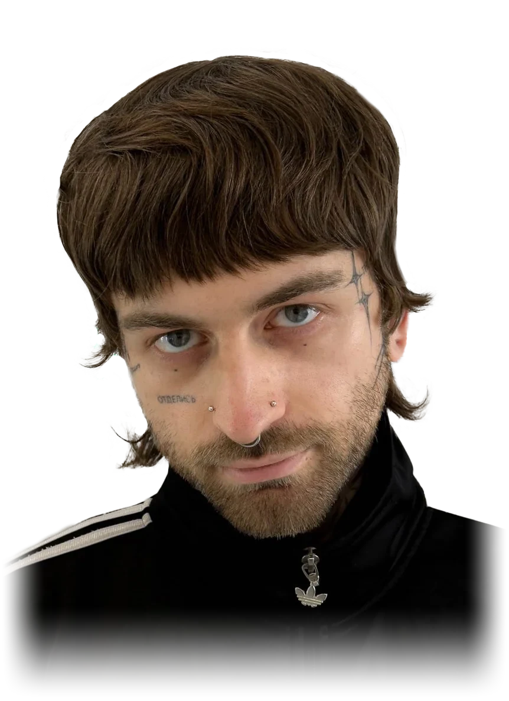

DigitalDesigner
I wanna make this
world less boring...

Webdesign, Grafikdesign, KI-Scripting und technisches SEO — aus einer Hand. Ich verbinde Gestaltung mit technischem Verständnis und baue Websites, die nicht nur gut aussehen, sondern auch schnell laden, performen und gefunden werden.
Ein freies Testprojekt in nur 4 Tagen: komplettes Branding von null — von Naming über Logo und Produktdesign bis zum ersten Screendesign-Entwurf, inklusive KI-generiertem Promo-Video.
Stecker festhalten und in die Steckdose ziehen
Stecker wieder herausziehen, um den Bereich zu schließen
„ProteinUp, ein aufstrebendes Unternehmen für hochwertiges Proteinpulver, sucht eine Website, die seine Produkte und Unternehmenskultur präsentiert. Als Webdesigner erstellen Sie ein Konzept für eine ästhetische und informative Website mit Startseitenvisualisierung, Hauptnavigation und Struktur.“
— Die AufgabenstellungHochwertiges Proteinpulver herstellen und vertreiben — neue Kunden gewinnen, bestehende Kunden langfristig binden.
Gesundheitsbewusste Menschen und Fitness-Liebhaber, denen pflanzliche Proteine wichtig sind (Veganer/Vegetarier) — 18 bis 50+ Jahre, mit Schwerpunkt Mitte bis Ende 20; dank des höheren Preispunkts auch bis 50+ Jahre erreichbar.
Na? Wird die Seite zu lang? Du kannst oben den Stecker einfach ziehen und schon ist alles wieder weg.
Technisches SEO ist für mich kein Nice-to-have, sondern Teil jedes Projekts — von Core Web Vitals bis zu Rankings. Diese Werte zeigen, was nach einer Optimierung typischerweise erreichbar ist:
Auch privat beschäftige ich mich gern kreativ:
Fotografie, Bildbearbeitung, Malen und Zeichnen, Tätowieren, DIY Fashion Projekte und und und...
Ein paar zusätzliche Arbeiten abseits der klassischen Website-Projekte. Nebenbei bin ich außerdem in einem Verein namens Zinnober aktiv und wirke dort an der Organisation eines Festivals sowie mehrerer Konzerte mit.
Komplett gebaut mit Claude Code auf Basis des Claude Sonnet 5 Modells von Anthropic — kein Screendesign vorab in Figma oder Sketch, kein Page-Builder, kein Template. Jede Idee, jedes Layout und jede Animation kam direkt aus meinem Kopf und wurde Schritt für Schritt im Dialog umgesetzt, getestet und verfeinert. Technisch steckt reines HTML, CSS und Vanilla-JavaScript dahinter — eine einzige Datei, kein Framework, kein Build-Step. Statt des nativen Browser-Scrollens steuert ein eigener requestAnimationFrame-Loop nahezu jede Bewegung auf der Seite: Scroll-Ease, Reveal-Animationen per IntersectionObserver, gepinnte Scroll-Abschnitte und die Cursor-Interaktionen. Versioniert mit Git.
6-Sekunden-Intro, danach übernimmt der eigene Scroll-Loop komplett von der nativen Browser-Scrollleiste.
Handgezeichnete SVG-Pfade plus ein Partikelsystem mit echten Geschwindigkeitsvektoren statt fester Positionsformeln.
IntersectionObserver löst die Ein- und Aufhell-Animationen aus, sobald der Abschnitt in den Viewport scrollt.
Reines CSS mit transform-style: preserve-3d für den Flip-Effekt, kein Animations-Framework.
position: sticky pro Karte mit steigendem z-index - dadurch stapeln sie sich sichtbar beim Scrollen.
Der SVG-Pfad besteht aus hunderten gesampelten Punkten - dadurch weicht die Linie dem Cursor wie ein Magnet aus.
Gepinnter Scroll-Chat, Steckdosen-Drag per Pointer Events, eigenes iFrame-Handling für den Prototyp.
Gepinnter Scroll-Track wie die Hauptgalerie - die Slide-Position folgt 1:1 dem Scroll-Fortschritt, kein Wheel-Hijacking.
Drei Bildreihen laufen scroll-gebunden gegenläufig - alle Positionen aus einem einzigen Scroll-Fortschrittswert berechnet.
AJAX-Versand per fetch() an Formspree, Honeypot + hCaptcha gegen Spam - kein eigenes Backend.
Lava-Tropfen im Dark Mode, realistischer Rauch im Light Mode - je nach Farbmodus komplett andere Partikel-Physik.
Reagiert live auf die fallenden Cursor-Tropfen und spannt dann einen Regenschirm auf. Die Gelenkpositionen der Duck-Pose habe ich vorab mit dem freien Tool animating.rocks geplant und dann 1:1 in SVG-Koordinaten übertragen.
Laufende Durchgänge zu Ladezeit, Scroll-Ruckeln, Responsive-Verhalten und Barrierefreiheit (WCAG/BFSG).
Einstellungen wirken sofort, ohne Neuladen der Seite. Diese Seite orientiert sich an den Web Content Accessibility Guidelines (WCAG) und dem Barrierefreiheitsstärkungsgesetz (BFSG).